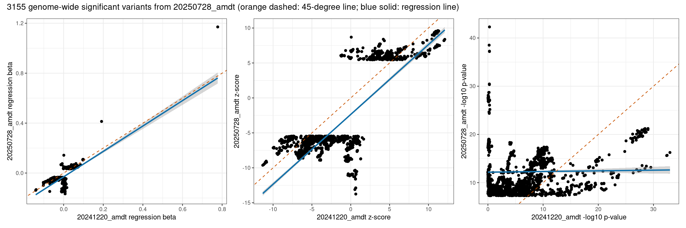
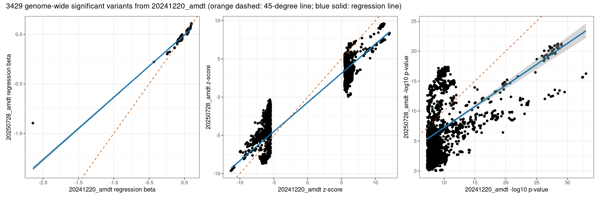

Last updated: 2025-10-08
Checks: 7 0
Knit directory: scratch/
This reproducible R Markdown analysis was created with workflowr (version 1.7.2). The Checks tab describes the reproducibility checks that were applied when the results were created. The Past versions tab lists the development history.
Great! Since the R Markdown file has been committed to the Git repository, you know the exact version of the code that produced these results.
Great job! The global environment was empty. Objects defined in the global environment can affect the analysis in your R Markdown file in unknown ways. For reproduciblity it’s best to always run the code in an empty environment.
The command set.seed(20250402) was run prior to running the code in the R Markdown file. Setting a seed ensures that any results that rely on randomness, e.g. subsampling or permutations, are reproducible.
Great job! Recording the operating system, R version, and package versions is critical for reproducibility.
Nice! There were no cached chunks for this analysis, so you can be confident that you successfully produced the results during this run.
Great job! Using relative paths to the files within your workflowr project makes it easier to run your code on other machines.
Great! You are using Git for version control. Tracking code development and connecting the code version to the results is critical for reproducibility.
The results in this page were generated with repository version 7692603. See the Past versions tab to see a history of the changes made to the R Markdown and HTML files.
Note that you need to be careful to ensure that all relevant files for the analysis have been committed to Git prior to generating the results (you can use wflow_publish or wflow_git_commit). workflowr only checks the R Markdown file, but you know if there are other scripts or data files that it depends on. Below is the status of the Git repository when the results were generated:
working directory clean
Note that any generated files, e.g. HTML, png, CSS, etc., are not included in this status report because it is ok for generated content to have uncommitted changes.
These are the previous versions of the repository in which changes were made to the R Markdown (analysis/compare_mmi_with_omm_34.Rmd) and HTML (docs/compare_mmi_with_omm_34.html) files. If you’ve configured a remote Git repository (see ?wflow_git_remote), click on the hyperlinks in the table below to view the files as they were in that past version.
| File | Version | Author | Date | Message |
|---|---|---|---|---|
| Rmd | 7692603 | Xiang Zhu | 2025-10-08 | compare wgs-based gwas xiangzhu/brain2gene#14 on two versions of idps |
Number of variants in the new GWAS: 73311410 Number of variants in the old GWAS: 75287509 Number of genome-wide significant variants in the new GWAS: 3155 Number of genome-wide significant variants in the old GWAS: 3429 Number of GWAS loci in the new GWAS: 53 Number of GWAS loci in the old GWAS: 60 Total number of rows after joining two data frames: 73169071 Pearson correlation between new_A1FREQ in new and old_A1FREQ in old:
Estimate = 0.99999976, 95% CI = [0.99999976, 0.99999976]
Regression coefficients for new_A1FREQ (new ~ old):
Estimate Std. Error t value Pr(>|t|)
(Intercept) 1.979041e-07 1.207735e-08 1.638638e+01 2.393315e-60
x 1.000001e+00 8.139583e-08 1.228565e+07 0.000000e+00
Pearson correlation between new_BETA in new and old_BETA in old:
Estimate = 0.55625103, 95% CI = [0.55609278, 0.55640924]
Regression coefficients for new_BETA (new ~ old):
Estimate Std. Error t value Pr(>|t|)
(Intercept) -0.0003863109 2.653075e-05 -14.56087 4.982536e-48
x 0.5705261266 9.964361e-05 5725.66703 0.000000e+00
Pearson correlation between new_SE in new and old_SE in old:
Estimate = 0.99765052, 95% CI = [0.99764945, 0.99765160]
Regression coefficients for new_SE (new ~ old):
Estimate Std. Error t value Pr(>|t|)
(Intercept) 0.001402369 2.180736e-06 643.0715 0
x 1.020774682 8.194696e-06 124565.2846 0
Pearson correlation between new_CHISQ in new and old_CHISQ in old:
Estimate = 0.34465788, 95% CI = [0.34445595, 0.34485978]
Regression coefficients for new_CHISQ (new ~ old):
Estimate Std. Error t value Pr(>|t|)
(Intercept) 0.6820020 0.0002071667 3292.044 0
x 0.3471706 0.0001105429 3140.596 0
Pearson correlation between new_LOG10P in new and old_LOG10P in old:
Estimate = 0.33165490, 95% CI = [0.33145095, 0.33185881]
Regression coefficients for new_LOG10P (new ~ old):
Estimate Std. Error t value Pr(>|t|)
(Intercept) 0.2981950 7.141686e-05 4175.415 0
x 0.3327515 1.106537e-04 3007.142 0
Pearson correlation between new_ZSCORE in new and old_ZSCORE in old:
Estimate = 0.56250291, 95% CI = [0.56234626, 0.56265952]
Regression coefficients for new_ZSCORE (new ~ old):
Estimate Std. Error t value Pr(>|t|)
(Intercept) -0.001446066 9.887387e-05 -14.62536 1.935789e-48
x 0.561648573 9.651040e-05 5819.56515 0.000000e+00Pearson correlation between new_A1FREQ in new and old_A1FREQ in old:
Estimate = 0.99999847, 95% CI = [0.99999836, 0.99999857]
Regression coefficients for new_A1FREQ (new ~ old):
Estimate Std. Error t value Pr(>|t|)
(Intercept) -6.312032e-05 1.155253e-05 -5.463765 5.023795e-08
x 9.999572e-01 3.114361e-05 32107.941595 0.000000e+00
Pearson correlation between new_BETA in new and old_BETA in old:
Estimate = 0.53604806, 95% CI = [0.51070510, 0.56046029]
Regression coefficients for new_BETA (new ~ old):
Estimate Std. Error t value Pr(>|t|)
(Intercept) -0.03025597 0.001042757 -29.01537 2.856629e-164
x 1.01765911 0.028541416 35.65552 3.053895e-234
Pearson correlation between new_SE in new and old_SE in old:
Estimate = 0.99996171, 95% CI = [0.99995895, 0.99996430]
Regression coefficients for new_SE (new ~ old):
Estimate Std. Error t value Pr(>|t|)
(Intercept) 0.0001059747 1.594440e-06 66.46514 0
x 1.0169208599 1.584794e-04 6416.74027 0
Pearson correlation between new_CHISQ in new and old_CHISQ in old:
Estimate = 0.03305614, 95% CI = [-0.00184222, 0.06787408]
Regression coefficients for new_CHISQ (new ~ old):
Estimate Std. Error t value Pr(>|t|)
(Intercept) 51.38057603 0.49922771 102.920120 0.00000000
x 0.02767743 0.01490302 1.857169 0.06338024
Pearson correlation between new_LOG10P in new and old_LOG10P in old:
Estimate = 0.01714838, 95% CI = [-0.01775848, 0.05201350]
Regression coefficients for new_LOG10P (new ~ old):
Estimate Std. Error t value Pr(>|t|)
(Intercept) 12.1693595 0.11415612 106.6027749 0.0000000
x 0.0138799 0.01441244 0.9630504 0.3355961
Pearson correlation between new_ZSCORE in new and old_ZSCORE in old:
Estimate = 0.76598089, 95% CI = [0.75116313, 0.78002712]
Regression coefficients for new_ZSCORE (new ~ old):
Estimate Std. Error t value Pr(>|t|)
(Intercept) -2.3599261 0.07255071 -32.52795 2.167953e-200
x 0.9989344 0.01493055 66.90541 0.000000e+00Pearson correlation between new_A1FREQ in new and old_A1FREQ in old:
Estimate = 0.99999901, 95% CI = [0.99999894, 0.99999908]
Regression coefficients for new_A1FREQ (new ~ old):
Estimate Std. Error t value Pr(>|t|)
(Intercept) -0.0001100184 1.109924e-05 -9.91225 7.453859e-23
x 1.0000435394 2.402028e-05 41633.29822 0.000000e+00
Pearson correlation between new_BETA in new and old_BETA in old:
Estimate = 0.91059753, 95% CI = [0.90470021, 0.91614597]
Regression coefficients for new_BETA (new ~ old):
Estimate Std. Error t value Pr(>|t|)
(Intercept) -0.0058950 0.0002846059 -20.71285 6.84727e-90
x 0.6301025 0.0048852533 128.98053 0.00000e+00
Pearson correlation between new_SE in new and old_SE in old:
Estimate = 0.99998164, 95% CI = [0.99998037, 0.99998283]
Regression coefficients for new_SE (new ~ old):
Estimate Std. Error t value Pr(>|t|)
(Intercept) 0.0001477636 1.027475e-06 143.8124 0
x 1.0093515936 1.044851e-04 9660.2445 0
Pearson correlation between new_CHISQ in new and old_CHISQ in old:
Estimate = 0.41698450, 95% CI = [0.38894038, 0.44425653]
Regression coefficients for new_CHISQ (new ~ old):
Estimate Std. Error t value Pr(>|t|)
(Intercept) 0.8858138 1.08497240 0.816439 4.143059e-01
x 0.6901356 0.02569686 26.856806 2.347938e-144
Pearson correlation between new_LOG10P in new and old_LOG10P in old:
Estimate = 0.41713177, 95% CI = [0.38909169, 0.44439962]
Regression coefficients for new_LOG10P (new ~ old):
Estimate Std. Error t value Pr(>|t|)
(Intercept) 0.2024238 0.26287424 0.7700406 4.413289e-01
x 0.7036641 0.02618939 26.8682892 1.819145e-144
Pearson correlation between new_ZSCORE in new and old_ZSCORE in old:
Estimate = 0.92828449, 95% CI = [0.92350716, 0.93277388]
Regression coefficients for new_ZSCORE (new ~ old):
Estimate Std. Error t value Pr(>|t|)
(Intercept) -0.6954385 0.032916142 -21.12758 3.066326e-93
x 0.7624074 0.005217243 146.13224 0.000000e+00 20250728_amdt p < 5e-08 20250728_amdt p >= 5e-08
20241220_amdt p < 5e-08 1182 2247
20241220_amdt p >= 5e-08 1973 73163669
Fisher's Exact Test for Count Data
data: contingency_table
p-value < 2.2e-16
alternative hypothesis: true odds ratio is not equal to 1
95 percent confidence interval:
8.402051e+03 4.503600e+15
sample estimates:
odds ratio
13099.11 
R version 4.5.1 (2025-06-13)
Platform: x86_64-pc-linux-gnu
Running under: Ubuntu 20.04.6 LTS
Matrix products: default
BLAS: /usr/lib/x86_64-linux-gnu/atlas/libblas.so.3.10.3
LAPACK: /usr/lib/x86_64-linux-gnu/atlas/liblapack.so.3.10.3; LAPACK version 3.9.0
locale:
[1] LC_CTYPE=C.UTF-8 LC_NUMERIC=C LC_TIME=C.UTF-8
[4] LC_COLLATE=C.UTF-8 LC_MONETARY=C.UTF-8 LC_MESSAGES=C.UTF-8
[7] LC_PAPER=C.UTF-8 LC_NAME=C LC_ADDRESS=C
[10] LC_TELEPHONE=C LC_MEASUREMENT=C.UTF-8 LC_IDENTIFICATION=C
time zone: America/Los_Angeles
tzcode source: system (glibc)
attached base packages:
[1] stats graphics grDevices utils datasets methods base
other attached packages:
[1] xzTools_0.0.0.9000 patchwork_1.3.1 ggplot2_3.5.2 dplyr_1.1.4
[5] data.table_1.17.8
loaded via a namespace (and not attached):
[1] Matrix_1.7-3 gtable_0.3.6 jsonlite_2.0.0 compiler_4.5.1
[5] promises_1.3.3 tidyselect_1.2.1 Rcpp_1.1.0 stringr_1.5.2
[9] git2r_0.36.2 later_1.4.4 jquerylib_0.1.4 splines_4.5.1
[13] scales_1.4.0 yaml_2.3.10 fastmap_1.2.0 lattice_0.22-5
[17] R6_2.6.1 labeling_0.4.3 generics_0.1.4 workflowr_1.7.2
[21] knitr_1.50 tibble_3.3.0 rprojroot_2.1.1 RColorBrewer_1.1-3
[25] bslib_0.9.0 pillar_1.11.1 R.utils_2.13.0 rlang_1.1.6
[29] cachem_1.1.0 stringi_1.8.7 httpuv_1.6.16 xfun_0.53
[33] fs_1.6.6 sass_0.4.10 cli_3.6.5 mgcv_1.9-1
[37] withr_3.0.2 magrittr_2.0.4 digest_0.6.37 grid_4.5.1
[41] nlme_3.1-168 lifecycle_1.0.4 R.oo_1.27.1 R.methodsS3_1.8.2
[45] vctrs_0.6.5 evaluate_1.0.5 glue_1.8.0 farver_2.1.2
[49] whisker_0.4.1 rmarkdown_2.30 tools_4.5.1 pkgconfig_2.0.3
[53] htmltools_0.5.8.1